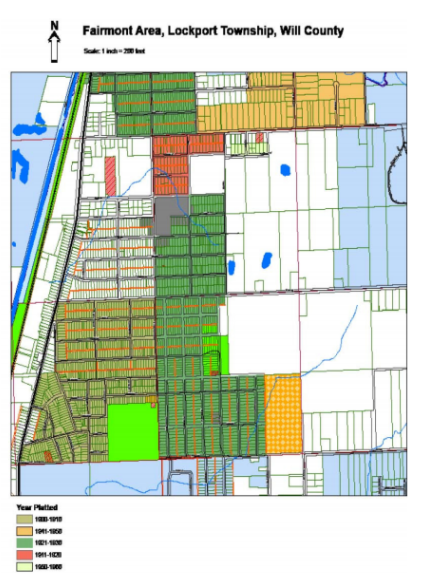

Fairmont History
Fairmont is a small, urban, unicorporated neighborhood located between Lockport and Joliet in Will County, Illinois. The region where Fairmont was initially settled can be dated back far to the 1870's, with the population during that time consisting of Eastern European and Irish immigrants who moved to Illinois to work on the Illinois & Michigan Canal, the Rock Island Railroad, and the Illinois Ship and Sanitary Canal. By the 1950's, Fairmont grew into a stable neighborhood, mainly due to the large influx of African Americans moving to northern states after WW2. Currently, Fairmont facing a change to its population, with a growing number of Hispanic residents moving into the neighborhood. A neighborhood plan called the Chicago Metropolitan Agency for Planning (CMAP) is currently in effect to help the future of Fairmont grow into a stronger tomorrow. Detailed below is the history of how this strong neighborhood grew into a great community.
Early Migration - Late 1800's to Early 1900's
 As far as we know, the earliest resident of Fairmont was a man by the name of Isaac Nobes, an English immigrant who owned the Oak Hill Quarry in Joliet in 1873 and built his home on what is now named Nobes Avenue and Illinois Route 171. The Nobes Mansion was a beautifully crafted building that reflected the architectual influence of the original immigrants who lived there. However, over time this great monument was torn down after it became too much work to keep up, and because it was too large or expensive for another family to purchase, it was demolished. This is one of the few glimpses we have into Fairmonts past as there is no documented history on the early years of Fairmont prior to 1940.
Major Industries Attract Immigration
What drew many people to this location than anywhere else was the availability of work. Major industrial opportunities were available for immigrants to take up, ranging from canal construction, cemetary construction, and also railroad construction.
Illinois & Michigan Canal (1836-1848)
The I&M Canal currently runs for 96 miles from Chicago to La Salle, Illinois and its construction attracted a large number of Irish, German, and Swedish immigrants to assist in its construction. The construction encouraged the growth of Joliet and surrounding areas when limestone was discovered, thus giving Joliet the name "City of Stone". This growth continued until Indiana's limestone was discovered to be superior, reducing Joliet's limestone output and total number of jobs. However, the I&M Canal served Joliet greatly, serving as the most significant aspect to the growth of the manufacturing industry for Joliet.
Russian Grove Cemetary (Early 1900's - Present)
The Russian Grove Cemetary sits on the northern side of A.F. Hill Park and was originally used for picnics by the members of the St. Nicholas Orthodox Church which used to be located in Fairmont. Today the cemetary does not appear to be frequented, and the upkeep is minimal. Yet, Russian, Greek, and Serbian. There are still grave markers today in the cemetary with Eastern European characters to denote the placement of graves.
Rock Island Railroad (1852 - Present)
The Rock Island Railroad established in 1852 in Joliet worked in conjunction with the Joliet Steel Mill to transport goods throughout the region. Today, Metra currently uses the train lines for commuter trains to Chicago.
Second Wave of Migration - 1950's through 1980's
In the second wave of migration, Fairmont saw an increase of African American migrants moving from the south for the booming industry and wide range of available jobs found in Joliet at the time. Many residents described Fairmont as country living in the city, and chose to live in an unicorporated neighborhood for its rural charm, and cheap land prices. Residents of different ethnic backgrounds lived on the same block harmoniously, although there was some racial division at the thime, such as Oak Street, which historically has been a dividing line between White and African American homeowners.
The Hill
"The Hill" is a cultural reference to a section of Fairmont and Forest Park where the majority of the African American residents lived. To outsiders "The Hill" may have just been known as Riley's Hill, a street with an incline that passes through the southern end of Fairmont. "The Hill" bares great significane and was indicative of the outside reception of Fairmont. While residents spoke of the neighborhood being racially integrated in the 1960's, interviews revealed that White residents lived North of Oak Street, and African American residents to the South.
Currently "The Hill" is still a stigma that has been placed on Fairmont and Joliet. Anyone not from "The Hill" would consider it to be a dangerous area with a high concentration of poverty. While elements of this may be true, the crime does not appear to be coming from Fairmont itself, but from outside. The problems this neighborhood is facing are similar to that of any predominately low income neighborhoods in the country right now. A look into the actual neighborhood will reveal a number of hard working families with a strong commitment to a neighborhood that once thrived, and due to economic disinvestment is currently struggling.
Segregation or Integration?
The Fairmont neighborhood in the 1950's and 1960's was comprised of African American and Eastern European immigrants. In the 1970's the White population declined substantially, but not due to "white flight". Interviews with previous residents of Eastern European descent revealed positive memories of Fairmont as a place where people of different ethnicities lived harmoniously side by side. The out-migration of white residents can be attributed to the aging population needing different types of housing that Fairmont did not off at the time, including larger homes to raise a family or senior housing. Fairmont did not lose all of its White Eastern European population. North of Oak Street has many larger homes where long term residents have remained. Fairmont, South of Oak Street, does not have a varied housing stock. The majority of homes are what today's standards would consider 'starter homes' built inn the 1960's. The combination small square footage and size, the homes were likely not suitable for the second generation of Fairmont residents: people whose families immigrated there, were born in the neighborhood and raised there. Many of them reside in nearby areas, but have since left Fairmont with a fond memory of it.
Third Wave of Migration - 1980's to Present
Well Capping in 1996/1997
The majority of Fairmont homes were on private wells until 1996 when a joint project was taken on between the Will County Department of Health and Lockport Township. This project identified about 150 cross connected wells in the neighborhood. This meant private wells were still being used in conjunction with the Lockport Township wells, which posed a risk of cross contamination if the private wells were to get contaminated. This was a particular threat because Fairmont has a lot of vacant lots and dumping became a problem. This dumping could potentially contaminate the abandoned wells, thus contaminating the entire water system. Representatives went door to door to attempt to convince residents to close their private wells. Since a private well is essentially free water, many were not interested in participating and only 1/3 of the wells were closed. Additionally the Lockport Township Water Department does not have the authority to close the wells without consent, therefore, many were left open. This became a serious problem when the Lockport Township Water Department had two community wells that were contaminated, presumably due to cross contamination. There was a concern that abandoned wells on vacant properties were being used as sewers. Currently the cross contamination of wells in Fairmont is still a concern, as it is very expensive to decontaminate the water system.
Call to Action
The Fairmont Community has been undergoing an increase of community activism, and a few projects are underway due to a partnership between the Will County Land Use Department and the Fairmont Community Partnership. In 2008 a planning process began with the Chicago Metropolitan Agency for Planning (CMAP) in which the Land Use Department applied for a Local Technical Assistance Grant. This grant allowed the Land Use Department to get the assistance of a planner from CMAP to put together a neighborhood plan for Fairmont that plans for the future growth of the community. The plan was put together with the help of Fairmont residents and community leaders through a series of workshops to identify the wants and needs of the residents.
To date, some projects have been completed. CMAP has completed the visioning process which resulted in the neighborhood plan, as well as using Fairmont as a study area showing how infrastructure improvements can have a positive effect on the community for the Future Leaders in Planning Program (FLIP). A “safe routes to school” grant has been secured to allow for the construction of a segment of sidewalk leading to the Fairmont School, and a community garden has been started next to the Fairmont Community Center.